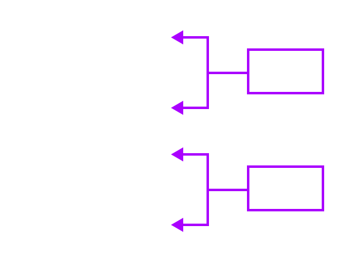

در این فصل، دو درس را از «شاهنامۀ حکیم ابوالقاسم فردوسی» و شعر «دلیران و مردان ایران زمین» را خواهیم خواند. وقتی این متنها را میخوانیم، حس و حال، شور و هیجان و روحیۀ پهلوانی در ما برانگیخته میشود و نسبت به میهن و دفاع از آن، وظیفهای آمیخته با غرور ملّی و سربلندی احساس میکنیم. به اینگونه آثار «متون حماسی» میگویند. حماسه، به معنای دلاوری و شجاعت است و در اصطلاح ادبی، روایتی داستانی از تاریخ تخیّلی یک ملّت است که با قهرمانیها، جنگاوریها و رخدادهای خارقالعاده در میآمیزد.
حماسه مربوط به دورانی کهن است که قبایل و طایفههای گوناگون متحد شده و اندک اندک تشکیل ملتی دادهاند؛ به همین سبب، حماسه هر ملّتی، بیانکنندۀ آرمانهای آن ملّت است و مجاهدات آن ملّت را در راه سربلندی و استقلال برای نسلهای بعدی روایت میکند. در حماسه، تاریخ و اساطیر، خیال و حقیقت به هم آمیخته میشود و شاعر، مورّخ ملّت به شمار میآید. بنابراین، هر حماسه چند ویژگی دارد: داستانی، قهرمانی، ملّی و خارقالعاده.
سخن بر سر پیکار میان ایرانیان و تورانیان است. هنگامی که کیخسرو در ایران بر تخت نشست، افراسیاب در سرزمین توران بر تخت پادشاهی نشسته بود. سپاه توران به یاری سردارانی از سرزمینهای دیگر به ایران میتازد. کیخسرو، رستم را به یاری میخواند. اشکبوس، پهلوان سپاه توران به میدان میآید و مبارز میجوید. یکی دو تن از سپاه ایران پای به میدان مینهند، اما سرانجام، رستم پیاده به میدان میرود. نبرد رستم با اشکبوس از عالیترین صحنههای نبرد تن به تن است که در آن طنزگویی و چالاکی و دلاوری و زبانآوری با هم آمیخته است.
1. بیت زیر را پس از مرتبسازی اجزای کلام، به نثر ساده برگردانید.
بشد تیز، رَهام با خود و گبر
همی گرد ز میدان درآمد به ابر
2. وقتی میگوییم «بهار» به یاد چه چیزهایی میافتید؟ درخت، گل، شکوفه، جوانه، شکفتن و... از چیزهایی هستند که به ذهن میرسند و به صورت یک مجموعه یا شبکه با هم میآیند؛ به این گونه شبکهها یا مجموعهها «شبکۀ معنایی» میگویند. اکنون معنای هر واژه را بنویسید؛ آنگاه با انتخاب کلماتی دیگر از متن درس برای هر واژه، شبکۀ معنایی بسازید.

3. در تاریخ گذشتۀ زبان فارسی، گاهی یک «متمم» همراه با دو حرف اضافه به کار میرفت؛ مانند:
به جمشید بر، تیرهگون گشت روز
همی کاست زو، فرّ گیتیفروز
فردوسی در این درس، نمونۀ دیگری برای این گونه کاربرد متمم پیدا کنید.
4. گاهی در برخی واژگان مصوّت «ا» به مصوّت «ی» تبدیل میشود؛ مانند: رکاب رکیب، جهاز جهیز به این شکلهای تغییر یافته، کلمات «ممال» گفته میشود. چند نمونه «ممال» در متن درس بیابید و بنویسید.
قلمرو ادبی
1. مفهوم کنایی هر یک از عبارتهای زیر را بنویسید.
عنان را گران کردن:
سر هم نبرد به گرد آوردن:
2. یکی از آداب حماسه، رجزخوانی پهلوانان دو سپاه است. کدام ابیات درس، نمونههایی از این رجزخوانی هستند؟
3. هرگاه در بیان ویژگی و صفت چیزی، زیادهروی و بزرگنمایی شود، در زبان ادبی به این کار «اغراق» میگویند. این آرایه در متنهای حماسی کاربرد فراوان دارد؛ مانند:
شود کوه آهن چو دریای آب
اگر بشنود نام افراسیاب
فردوسی
$*$
از متن درس، دو نمونه از کاربرد «اغراق» را بیابید و آن را توضیح دهید.
4. در کدام ابیات، لحن بیان شاعر، طنزآمیز است؟
قلمرو فکری
1. چرا رستم از رَهام برآشفت؟
2. به نظر شما چرا رستم پیاده به نبرد روی آورد؟
3. بر پایۀ این درس، چند ویژگی برتر رستم را بنویسید.
4. از دید جنبههای فکری و شخصیتی چه ویژگیهایی در کلام فردوسی است که ما ایرانیان بدان میبالیم؟
گنج حکمت
عامل و رعیت
ذوالنون مصری پادشاهی را گفت: «شنیدهام فلان عامل را که فرستادهای به فلان ولایت، بر رعیت درازدستی میکند و ظلم روا میدارد.» گفت: «روزی سزای او بدهم.» گفت: «بلی، روزی سزای او بدهی که مال از رعیت تمام ستده باشد. پس به زجر و مصادره از وی بازستانی و در خزینه نهی، درویش و رعیت را چه سود دارد؟» پادشاه خجل گشت و دفع مضرت عامل بفرمود در حال.
سر گرگ باید هم اول برید
نه چون گوسفند انمردم درید
گلستان، سعدی